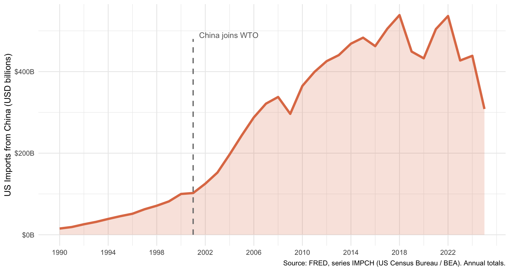

Lecture 13.1
Globalization and the China Shock
America First & The New Protectionism
“Chief Ripper-Offer”
“We’ve been ripped off by every country in the world, but China I would say is the leading candidate for the ‘chief-ripper-offer.’”
— Donald Trump, Rose Garden, April 2, 2025
Trump’s “Liberation Day” imposed tariffs of up to 145% on Chinese goods and double-digit tariffs on virtually every other trading partner. China retaliated with tariffs of 84%+ on US goods.
The Retreat from Globalization
- 2018–2019: First Trump trade war imposed $360 billion in Section 301 tariffs on Chinese goods (Trade Act of 1974)
- 2020: Phase One deal promised no new tariffs if China purchased $200 billion of U.S. goods and services
- 2021–2024: Biden maintained and expanded Trump-era China tariffs as bipartisan consensus shifted on trade
- April 2, 2025: “Liberation Day” imposed sweeping tariffs on nearly every trading partner
The Political Question - Why did free trade, long the orthodoxy in both parties, lose its public legitimacy?
The answer may lie in the China Shock.
Globalization: Concepts
Globalization
At the broadest level, globalization is the increasing integration of people, cultures and institutions
IMF’s four aspects: trade; investment; migration; knowledge
In economics, globalization typically refers to increasing trade and investment
Benefits of Globalization
- Increased capital flows
- Sharing of knowledge & technology
- Lower prices for consumers
- Cultural exchange
- New economic opportunities
- Others?
Challenges of Globalization
- Exploitation and weak regulation
- High start-up/investment costs
- Localized job loss and displacement
- Immigration pressures
- Erosion of social contracts
- Others?
Theory of Comparative Advantage
Ricardo (1817): a country should specialize in what it can produce at lower opportunity cost, even if it is absolutely better at everything
In a world of US–China trade:
- China has a comparative advantage in labor-intensive manufacturing (abundant, cheap labor)
- The US has a comparative advantage in high-skill, technology-intensive sectors
Standard prediction: trade liberalization raises aggregate welfare
- US workers displaced from manufacturing should reallocate to sectors where the US is competitive
- Adjustment is assumed to be relatively smooth and fast
The critical assumption: labor and capital move freely across sectors and regions
The China Shock
China’s Rise
In 1989, the Wall Street Journal predicted China would be a future growth laggard
Deng Xiaoping’s 1992 “Southern Tour” relaunched market reforms:
- Special Economic Zones (SEZs): 20 in 1991 → 150 by 2010
- FDI inflows surged from 0.7% of GDP (1980s) to 4.2% (1990s–2000s)
China’s share of world manufacturing exports: 2.3% (1991) → 18.8% (2013)
WTO accession in 2001 accelerated the surge
US imports from China rose by $304 billion between 1991 and 2007
US Imports from China

The Pre-2000 Consensus — and Its Challenge
Before China’s rise, economists largely agreed:
- Trade had not been a major cause of US manufacturing employment decline — technology was the main culprit
- Workers displaced by trade could readily relocate to other regions or sectors
- Any labor-market effects would be nationally diffuse, not locally concentrated
Autor, Dorn & Hanson (2013/2016) challenge all three:
- Chinese import competition did substantially reduce US manufacturing employment
- The shock was geographically concentrated — concentrated in specific communities
- Local adjustment was slow and painful, not smooth
Methodology: Local Labor Markets
ADH study commuting zones (CZs) — clusters of counties forming local labor markets (722 CZs in the contiguous US)
Key insight: US regions vary in their pre-existing industrial mix → some were far more exposed to Chinese imports than others
The identification strategy: to isolate the China supply shock from US demand shifts:
- Instrument US import growth from China using China’s export growth to other high-income countries (Australia, Germany, Japan, etc.)
- If the same Chinese industries were flooding markets in both the US and Germany, it must be a supply shock from China — not a reflection of US demand
This allows a causal claim: Chinese import competition → local employment decline
Key Finding 1: Industry Employment
Industries more exposed to Chinese import competition saw substantially larger declines in US manufacturing employment
A 1 percentage-point rise in import penetration → 1.3 log-point reduction in industry employment (Acemoglu et al. 2016)
The effect accelerated after China’s WTO accession (1999–2007):
- Manufacturing industries contracted by 3.6 log points/year in this period
- vs. only 0.3 log points/year during 1991–1999
Key Finding 2: Regional Losses Don’t Wash Out
Standard trade theory predicts displaced workers move, spreading the shock nationally
ADH find the opposite. In commuting zones more exposed to Chinese imports:
| Outcome | Effect of $1,000 more per-worker import exposure |
|---|---|
| Manufacturing employment share | −0.60 pp |
| Non-manufacturing employment share | −0.18 pp (not sig.) |
| Unemployment rate | +0.22 pp |
| Out of labor force | +0.55 pp |
- Job losses were not offset by gains elsewhere in local economies
- Labor mobility was low — especially among less-educated workers
Key Finding 3: Adjustment Is Slow
Standard models assume quick adjustment to trade shocks
ADH find the adjustment is remarkably slow:
- Wages and labor-force participation remain depressed for at least a full decade after the shock begins
- Exposed workers experience greater job churning and significantly lower lifetime income
- Government transfer payments (disability, UI) rise substantially in exposed regions
Bottom line: the costs of the China Shock were large, geographically concentrated, and long-lasting — far beyond what standard comparative-advantage models predicted
Discussion: The Evidence
What is Autor et al.’s main challenge to standard trade theory?
Why does the methodology matter, e.g. why can’t they just compare regions with more vs. fewer manufacturing jobs?
Does the evidence suggest free trade was a mistake, or that adjustment support failed? Is there a difference?
What does the “no geographic mobility” finding tell us about assumptions built into comparative advantage theory?
Political Implications
Did the China Shock Cause the Backlash?
- Autor, Dorn, Hanson & Majlesi (2020): congressional districts more exposed to Chinese imports experienced:
- Greater political polarization
- Shift toward more conservative Republican representatives
- Erosion of moderate Democrats in manufacturing-exposed districts
- Colantone & Stanig (2018): similar patterns in Europe — regions more exposed to Chinese imports moved toward nationalist/populist parties
This narrative is compelling: trade liberalization hurt specific communities → those communities turned to populist politicians → Trump, Brexit, and the broader wave of economic nationalism
The Pushback: Mechanism Is Unclear
- The aggregate-to-individual link is contested:
- Research finds weak individual-level evidence that trade-exposed workers vote differently than similar workers in less-exposed areas
- Economic grievance may affect preferences modestly and temporarily (Margalit 2011)
- The aggregation problem: regional patterns may reflect community-level social change, not individual pocketbook voting
- Alternative explanations (Inglehart & Norris): “cultural backlash”
- Identity and values, not just wallets, drive populist voting
- Affected communities also had high opioid mortality, family dissolution, declining social trust
- Key question: Does the China Shock cause political change directly through economic grievance, or indirectly through community decline?
Remaining Questions
Is the China Shock → political backlash link causal, or were affected regions already culturally/demographically primed for populism?
Does economic grievance directly drive votes, or does it work through:
- Social network erosion and community decline?
- Elite cue-taking and media framing (Fox News, etc.)?
- Identity concerns activated by visible economic loss?
ADH establish an important economic fact — localized, persistent harm from trade — but the political transmission mechanism remains an active area of research
The Bigger Debate
Two Camps
Free trade’s defenders
- Aggregate gains from trade are real and large
- China’s rise lifted 800 million people out of poverty
- US consumers benefited from cheaper goods
- The answer is better adjustment assistance, not protectionism
- Tariffs invite retaliation and raise prices
China Shock critics
- Aggregate gains masked severe local costs
- Adjustment assistance was underfunded and ineffective
- Communities — not just workers — were damaged
- Trade policy is inseparable from distributional politics
- The backlash was predictable, and economists ignored the warning signs
Discussion
Do you find the “China ripped us off” narrative convincing after reading ADH? What does the evidence actually say?
If adjustment costs are large and slow, what is the appropriate policy response?
- Better social insurance? Industrial policy? Trade restrictions?
Does the empirical evidence justify Trump’s tariffs? Or is that the wrong question to ask of social science?
If pocketbook voting doesn’t fully explain the Trump coalition, what does?